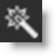
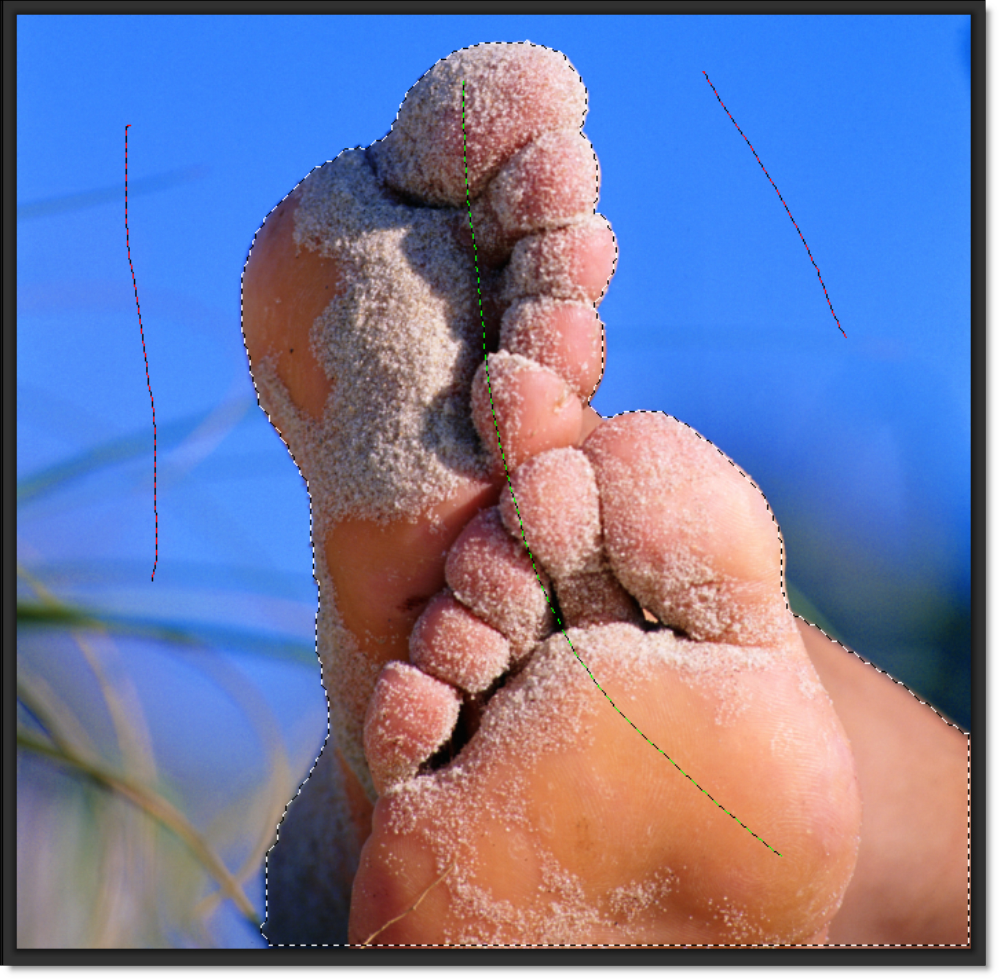
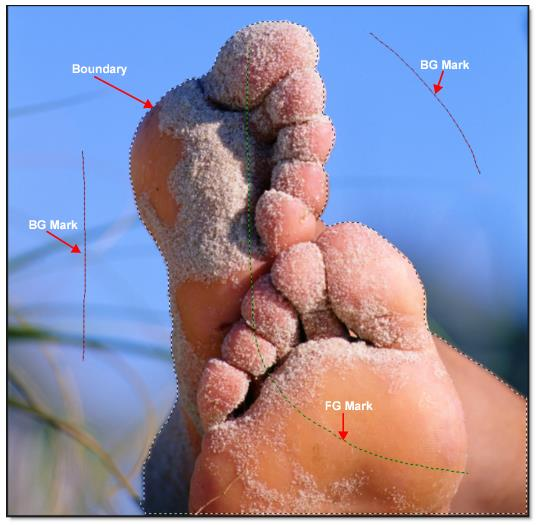
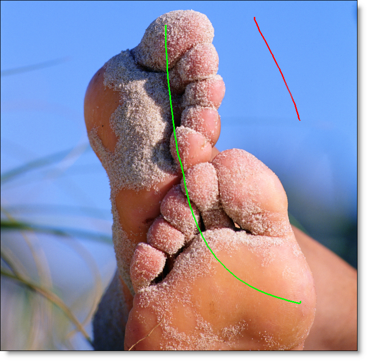
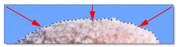
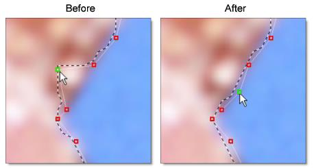
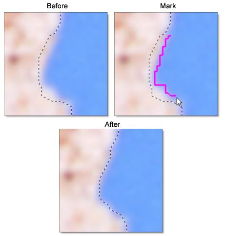
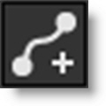

Snap Mask
Snap is an easy to use interactive image masking tool. Snap provides instant visual feedback by snapping an editable curve to an object's boundary even if it has vague or low contrast edges.
Go to the Snap Mask Tutorial to see how it works.
Snap consists of a combination of on-screen and toolbar controls.
Workflow
Using a coarse to fine editing approach, an area of the image is selected by first marking the object and then refining the boundary. Object marking occurs at a coarse level, which roughly defines an object by marking a few lines. Next, boundary editing works at a finer scale by either clicking and dragging polygon points to edit the object boundary or drawing a stroke along the object’s edge.
Object Marking
Instead of tracing the boundary of an object, Snap uses lines and curves to define the object.
Mark Foreground
Click the Mark Foreground icon and draw lines to mark the foreground area--the region to be isolated. With each click and drag of the mouse, a green line is drawn.
Mark Background
Click the Mark Background icon and draw lines to mark the background area. With each click and drag of the mouse, a red line is drawn.
Note: You can automatically draw background lines by clicking the right mouse button and dragging.
As soon as the first background line is drawn, Snap calculates a boundary curve that is displayed as a black and white dashed line around the object.
Add additional FG and BG lines as needed so that your object is surrounded by the boundary. Don't be concerned at this point if the boundary is not exactly following your object. The curve can be refined further using the boundary editing tools.
Boundary Editing
Even though object marking does a pretty good job of creating an accurate boundary, there can still be some errors, especially around vague or low contrast edges. To remedy these errors, there are simple polygon point editing tools to refine the object's boundary. Two tools are provided for polygon editing: Edit Points and Override Edge. When either of these tools is selected, the boundary created in the object marking step is converted into editable polygons and you will see a noticeable refinement in the boundary.
Edit Points
Click the Edit Points icon and drag points to adjust the shape of the polygon.
Compared with a simple polygon where you need to modify many points, Snap uses far fewer points to define the object shape. You should see variation in the boundary even though there are no points directly over the variations.
Note: The Edit Points icon can also be used to display and edit control points after the boundary is converted to a path.
Point Editing Shortcuts
Shortcut | Action |
|---|---|
Alt+click between two points | Add points |
Hover over point+Delete | Delete points |
Alt+drag a point | Uses magnetism to snap a point to an object’s boundary |
Override Edge
Click the Override Edge icon and draw a stroke along the edge of your object where the boundary doesn’t correctly follow the edge.
Once a stroke has been drawn, Snap optimizes the object boundary. The optimized boundary automatically snaps to the object boundary even though the polygon points may not be on it.
An entire segment of the polygon is replaced by drawing a single stroke and is much easier than dragging individual points.
Clear Foreground / Background Marks
Clears all foreground ad background marks.
Convert Curve to a Path
When happy with the boundary you have created, click the Convert Curve to a Path icon to apply it to the layer and convert it to an editable path. Additional boundaries can be created and applied to the layer. When boundaries overlap, a hole in the mask is created.
Show Control Points
It is sometimes helpful to turn off the display of path points to see the accuracy of your path. When turned off, you can still adjust the hidden points by click+dragging on the path and the nearest point will be adjusted.